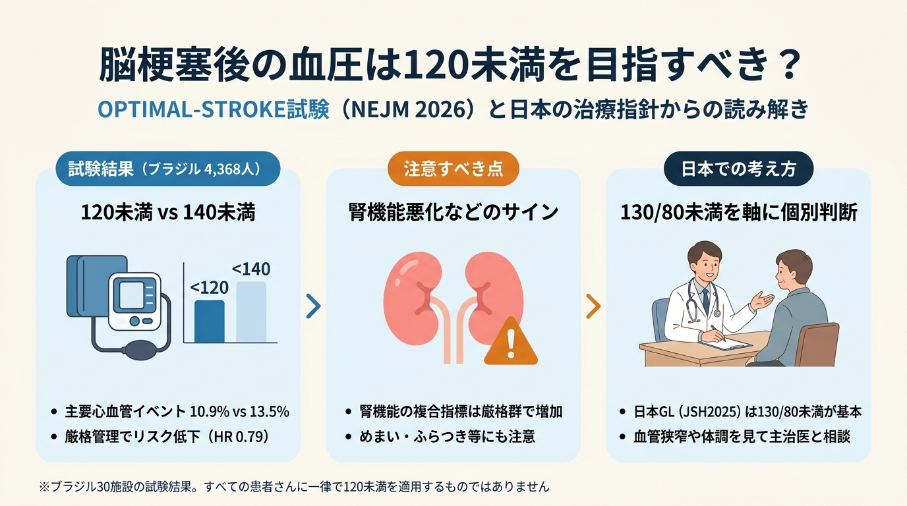

脳梗塞後の血圧は120未満を目指すべきか（OPTIMAL-STROKE）
OPTIMAL-STROKE試験（NEJM 2026）の結果と日本の治療指針の考え方をまとめた概念図です。

図の要点
- OPTIMAL-STROKE試験（ブラジル・4,368人）：収縮期血圧120 mmHg未満目標群は140 mmHg未満目標群に比べ、主要心血管イベントが10.9%対13.5%（ハザード比0.79）と低下した。
- 注意点：eGFR 50%以上低下または末期腎不全の複合腎アウトカムは厳格治療群でより多かった。
- 日本での考え方：JSH2025の基本目標は診察室130/80 mmHg未満（家庭125/75 mmHg未満）。体格や医療環境の違い、両側頸動脈狭窄や主幹動脈閉塞の有無、体調・腎機能を見て主治医と個別に判断する。
出典と注意
Sampaio Silva G, et al. N Engl J Med. 2026 (DOI: 10.1056/NEJMoa2612924, PMID: 43001741) 抄録および日本高血圧学会JSH2025等に基づいて作成。一般的な医学情報であり、自己判断で降圧薬を変更するための資料ではありません。